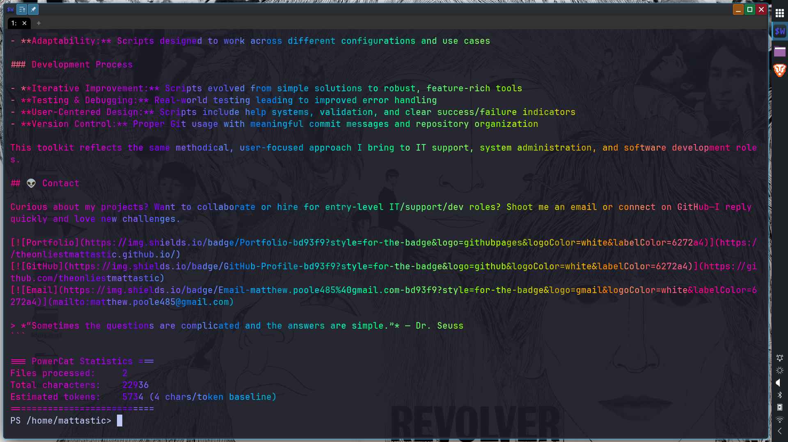
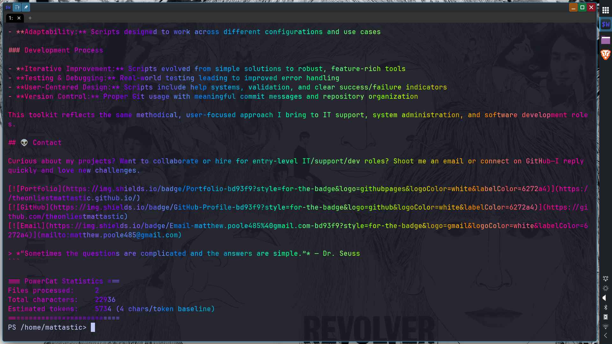

🧑🚀 The Intentional Builder
I am a Brooklyn-based technologist specializing in the "pipes" of a system—the underlying architecture, automation, and data integrity that make software stable. My background in the humanities drives my focus on clear education and architectural restraint. Whether building ECS-based game engines or engineering AI auardrails, I prioritize clarity and accessibility above all else.
☄️ Spotlight: Systems Architecture
🐈⬛ POWERcat — A Single‑Shot Concatenator
This is my flagship project: a published PowerShell module on the PowerShell Gallery with active users. It represents everything I value—clean code, real utility, and thoughtful design.
What It Does: Bundles source code and documentation into one clean, shareable file—perfect for recruiters, collaborators, or LLM ingestion. Solves a real problem I faced daily.
Why It Matters: Demonstrates the ability to ship working products, write maintainable code, and support real users.
Key Achievements: Published to official gallery · Comprehensive Pester test suite · CI/CD pipeline with GitHub Actions · Multiple ergonomic aliases · Documented for end users
Built with: PowerShell · Pester (automated tests) · GitHub Actions (CI/CD) · GitHub Pages (documentation)
Visual Showcase
 

🔬 Currently Working On
⚔️ Battle Tactics Arena
Status: Active Refactoring & Architecture Redesign
A 2D turn-based tactical RPG utilizing a custom-built ECS game engine framework. Originally built as a class project in a single monolithic file, now being refactored into production-quality code.
Architectural Evolution: Demonstrates transformation from legacy code (single file with globals) to a maintainable ECS pattern to decouple game state from logic, ensuring high-performance data processing and modular system design.
Current Focus: Finalizing entity architecture, implementing advanced battle mechanics (AI, pathfinding), and ensuring all systems are extensible for future features.
Built with: Lua · LÖVE2D · State machines · Data-driven design · Modular architecture · Git (professional practices)
Project Showcase


🚀 AI & Workflow Engineering
🧚 HYPERfix.nvim — Guardrail-Driven Development
A modular Neovim configuration built using a documentation-driven AI workflow.
The Innovation:
Integrated an AGENTS.md
framework that provides LLMs with strict
architectural context, reducing hallucinations and maintaining human ownership of the codebase.
Accessibility: Built with WCAG AAA compliance and designed specifically to reduce cognitive load for neurodivergent developers.
💉 BashParaphernalia — Linux System Administration Toolkit
A professional collection of self-contained Bash scripts for Linux system automation: DNF/Flatpak package management, cloud drive mounting, RGB setup, in-game automation, and batch file operations.
Real-World Skills: Shows ability to solve actual problems—package management, cloud integration, automation workflows.
Tech: Bash · Linux · rclone · OpenRGB · systemd · error handling · logging
❤️ Impact of Tobacco on Blood Pressure & Heart Rate
An undergraduate psychology research project demonstrating end-to-end data analysis in R. Analyzes raw survey data, runs statistical tests (ANOVA + post-hoc), and publishes results in reproducible R Markdown format with publication-quality visualizations.
Impact: Showcases ability to translate raw data into actionable insights with rigorous documentation for both technical and non-technical audiences.
Features: Data cleaning · ANOVA + post-hoc testing · Publication-quality visualizations · R Markdown reproducible workflow · Version control.
Built with: R · Tidyverse · ggplot2 · R Markdown · Statistical analysis
🛰️ Technical Spikes
- Systems Architecture: Advanced Lua, ECS patterns, State Machines, Data-Oriented Design
- Automation & DevOps: Bash/PowerShell CLI tooling, GitHub Actions, Pester testing
- Data & Audit: R (Tidyverse), Statistical reasoning, AI reasoning evaluation
- FOSS Philosophy: Linux (Nobara/Fedora), Neovim, Open-source contribution
🌌 Experience & Strengths
- IT & Support: Built and configured dozens of systems; diagnosed OS/network issues; documented solutions for knowledge reuse.
- HR & Data Coordination: Managed sensitive records, optimized processes, ensured compliance (Army National Guard, The Animal Foundation).
- Retail & Technical Support: POS troubleshooting, device/network setup, inventory management, end‑user training (AllSaints, Coffee Shop Keyholder).
- Core Strengths: Self‑motivated learner · Problem solver · Detail‑oriented · Creative thinker · Effective communicator
🌟 Achievements
- CompTIA A+ Certified
- CS50 Intro to Computer Science Certificate
- Unreal Engine 5 C++ Game Developer Certificate
- Summa Cum Laude Graduate (CCNY, 4.0 GPA)
- Multiple creative writing awards and scholarships
🌠 Values
I believe in clear education, fair wages, and reducing barriers to entry in tech. My code is written to teach as much as it runs, and my documentation is designed to empower others. Collaboration, empathy, and accessibility are at the heart of my work.
🪐 What I Offer Employers
- Shipped Products: Real modules in real repositories (PowerCat on PowerShell Gallery with active users)
- Automation & Scripting: PowerShell, Bash to reduce manual work, improve reliability, and streamline workflows
- Clean, Maintainable Code: Modular architecture, comprehensive documentation, and accessibility-first design
- Self-Directed Learning: No formal CS degree—but proven ability to learn, ship, and iterate based on real-world feedback
- IT Systems Knowledge: Linux administration, package management, CI/CD pipelines, and problem-solving under pressure
👽 Contact
Curious about my projects? Want to collaborate or hire for entry‑level IT/support/dev roles? Shoot me an email or connect on GitHub — I reply quickly and love new challenges.